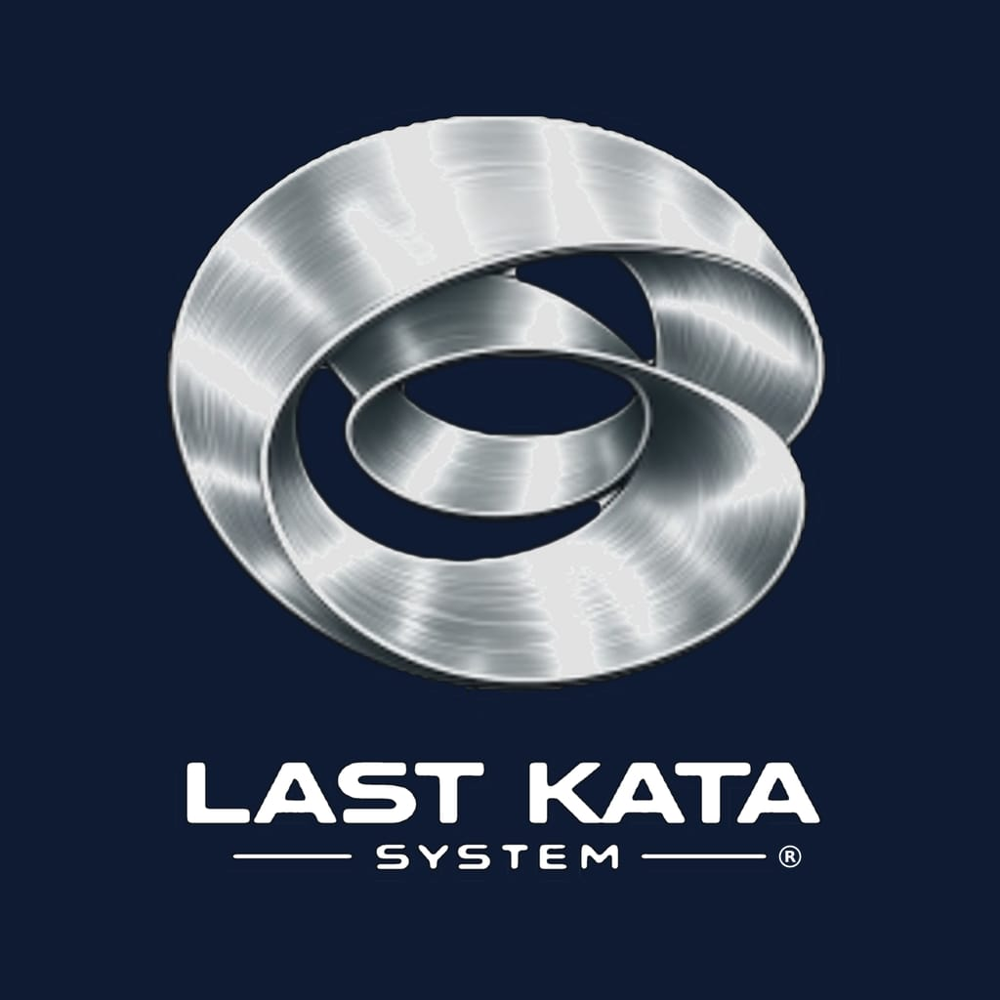

Conecta lo que se decide en el directorio con lo que pasa en el turno,
y lee las señales humanas antes de que lleguen a los números de costo y plazo.
最終の型 · el último patrón
Los sistemas actuales gestionan por separado la estrategia, la ejecución en terreno y el comportamiento de los equipos. Lo que queda entre esas capas es donde se pierden plazo y costo.
Se programa trabajo sin condiciones resueltas, y el cumplimiento castiga a quien no tenía cómo ejecutar.
Se descubren el día del turno, cuando ya no queda tiempo ni capacidad operativa para resolverlas.
Cuando el CPI y el SPI caen, el deterioro del equipo y del clima de trabajo empezó semanas antes.
Los proyectos no se pierden en el directorio ni en terreno. Se pierden en la conexión entre ambos.
Last Kata System articula la gobernanza, la trazabilidad de restricciones y la voz del equipo en un solo sistema integrado.
Un solo sistema de reuniones, compromisos y decisiones, con trazabilidad de quién decide qué y por qué, entre el Dueño y el Contratista.
| Nivel | Dueño | Contratista | Cadencia |
|---|---|---|---|
| Estratégico | Steering Committee | Sponsor Meeting | Mensual |
| Gerencial | Obeya Gerencial | — | Semanal |
| Táctico | Invitado | Obeya Táctico y Trisemanal | Semanal |
| Operacional | Conformidad del turno | Plan del Día (POD) | Diaria |
Del programa maestro al plan de tres semanas.
Solo entra a ejecución lo que tiene condiciones resueltas.
El turno registra avance y pérdidas con su causa.
Las pérdidas recurrentes escalan al nivel que puede resolverlas.
La misma lógica Plan–Do–Check–Act se repite en todos los niveles: cada atraso llega con su causa y cada decisión deja su porqué.
Al cierre de cada reunión, LKS mide cómo se siente el equipo para hablar, advertir riesgos y pedir ayuda.
Esa señal se compara con los indicadores técnicos del proyecto (avance, productividad, cumplimiento de lo liberado).
El sistema avisa con semanas de anticipación, antes de que caigan el costo y el plazo.
Modelo propietario de medición, con protección de propiedad intelectual en curso.
Ilustración conceptual, no corresponde a datos reales.
Cada hora perdida queda registrada con su causa y su responsable, turno a turno.
Lo que el Dueño debe liberar se ve en un solo lugar y escala a tiempo.
Todo lo que sube o baja entre Dueño y Contratista queda trazado.
Casos anonimizados de aplicación del método. Factor de productividad = HH reales / HH ganadas; un valor menor a 1,0 representa sobre-desempeño.
Resultados de casos específicos; no constituyen una garantía de desempeño en otros proyectos.
Revisión de programa maestro, cadencia de reuniones y mapa actual de pérdidas.
Despliegue en un contrato o frente crítico, con la plataforma LKS y acompañamiento.
Extensión a la cartera completa con indicadores de gobierno para el directorio.